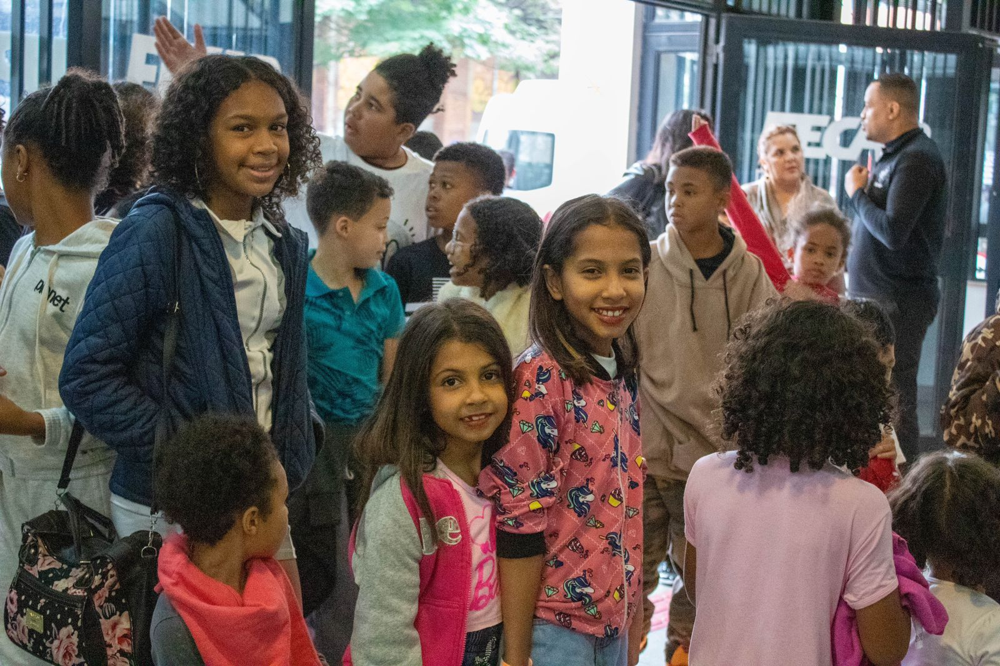
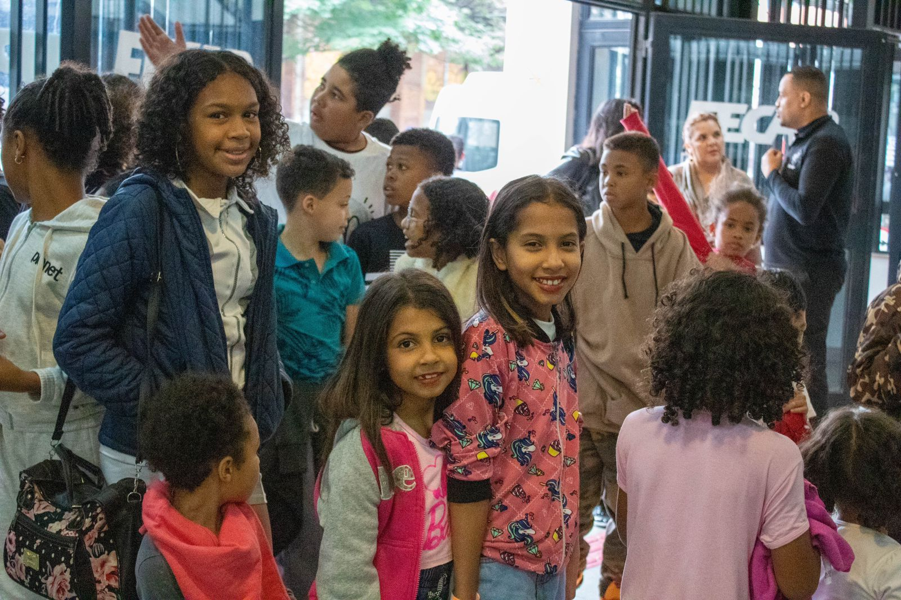

Páscoa Solidária
O que é?
A Páscoa Solidária é uma ação promovida pela FECAP Social na semana da Páscoa de cada ano. E tem como objetivo, levar ao público-alvo escolhido, seja ele infantil, terceira-idade etc., a magia da Páscoa, amor, empatia e claro, muito chocolate!
2024.1
O tema deste ano foi o apadrinhamento das 28 crianças atendidas pela ONG Nossa Casa Grajaú. Para isso, dos dias 20 a 27 de março, ficamos posicionados com uma mesinha ao lado do Asa. Assim, cada padrinho contribuía financeiramente e escrevia uma cartinha à criança, que também fez uma cartinha para o voluntário. A meta inicial era de 1 Ovo de Páscoa (10 reais) para cada criança. Entretanto, em 2 dias triplicamos nossa meta e cada criança recebeu 2 Ovos de Páscoa e 1 cenoura de chocolate. Como foi um sucesso, emendamos em uma segunda ação. A partir do dia 22 de março, o objetivo foi arrecadar o valor de 10 reais dos voluntários para destinar a ONG Missão Mão Amiga, que a Duda, integrante de projetos, faz parte. Essa ONG tinha a meta de arrecadar caixas de bombom e caixas de bispara a montagem de kits de chocolate para crianças em situação de rua. E em3 dias conseguimos ajudar a ONG a montar 200 Kits.
Resultados
Ação 1: 840 reais convertidos em 2 ovos de Páscoa e 1 cenoura de
chocolate para cada criança.
Ação 2: 460 reais enviados a ong, que os ajudou na composição dos 200
kits.
Hamburgada Feliz

 


O que é?
A Hamburgada Feliz é uma ação realizada pela FECAP Social em outubro para celebrar o Dia das Crianças. A partir de uma parceria com uma ONG ou orfanato, o objetivo é levar as crianças à FECAP para um dia de diversão com brinquedos infláveis, jogos, tintas, e muitos hambúrgueres. O evento também conta com a presença de diversos voluntários, sejam eles alunos da faculdade ou não. Nas inscrições dos voluntários, é possível escolher entre colaborar com a preparação dos alimentos na cozinha, organização da ação e nas brincadeiras com as crianças.
9ª edição
A 9° edição da Hamburgada Feliz ocorreu dia 21 de outubro, na FECAP, com o tema de fazendinha. Alunos da faculdade e demais interessados optaram por participarem como voluntário, comparecendo no evento e realizando a compra do ingresso de R$ 45,00, ou como um padrinho, doando a quantia desejada. A ONG parceira foi a Missão El Pallet, que possui o objetivo de atender pessoas em situação e rua e diversas famílias em vulnerabilidade em São Paulo. Também tivemos o apoio da Bateria da FECAP (swing da liberdade), o estacionamento Multi Park e o Melts Gastrobar. Ao total, contamos com R$ 5.019,00 arrecadados, 66 voluntários presentes, 25 padrinhos e 56 crianças.
Trote Solidário
O que é?
O Trote Solidário é uma ação realizada pela FECAP Social em todo início de semestre. Seu objetivo é promover na comunidade Alvarista a participação em ações sociais, especialmente, os novos ingressantes de cada semestre da FECAP. É realizado na faculdade, com a participação dos alunos durante a primeira ou segunda semana de aula dos calouros.
2024.1
Em razão das fortes chuvas em São Paulo, a FECAP Social se reuniu para arrecadar doações em dinheiro, alimentos não perecíveis e itens de higiene, para destinar às pessoas em situação de vulnerabilidade. Para isso, foi realizada uma parceria com o Cambuci Solidário, uma ONG que surgiu em 2019 da iniciativa da Sra. Adriana e seu esposo Sr. Ismael, de cederem sua residência para a produção de refeições aos moradores afetados pelas enchentes. Hoje, o grupo produz mais de 500 marmitex toda semana para distribuição. As arrecadações ocorreram durante os dias 04 a 08 de março, na FECAP, pelos integrantes da FECAP Social e com a participação de alunos e professores da faculdade. Foram arrecadados mais de 30kg de alimentos, itens de higiene e R$933,33. A entrega foi realizada dia 16 de março à Sra. Adriana e o Sr. Ismael. Além disso, foram realizados dois sorteios de kits exclusivos da FECAP Social para todos que contribuíram.
Itens Arrecadados
- Açúcar
- Arroz
- Farinha de milho
- Feijão
- Macarrão
- Molho de tomate
- Polenta
- Rosquinha
- Sal
- Seleta de legume
- Absorvente
- Aparelho de barbear
- Creme dental
- Escova de dente
- Sabonete